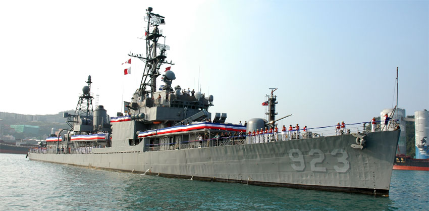
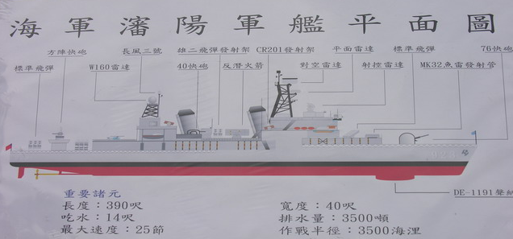
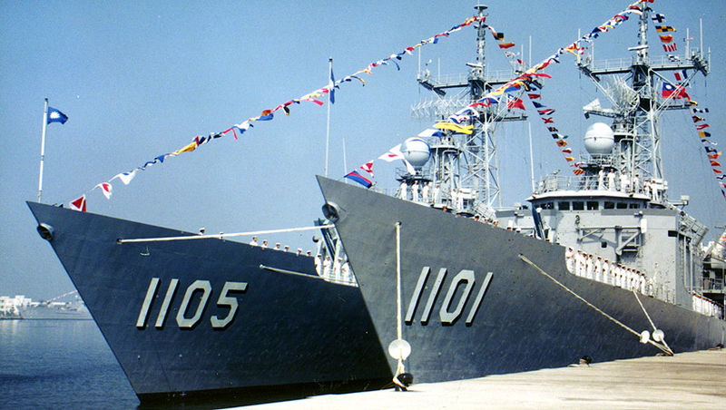
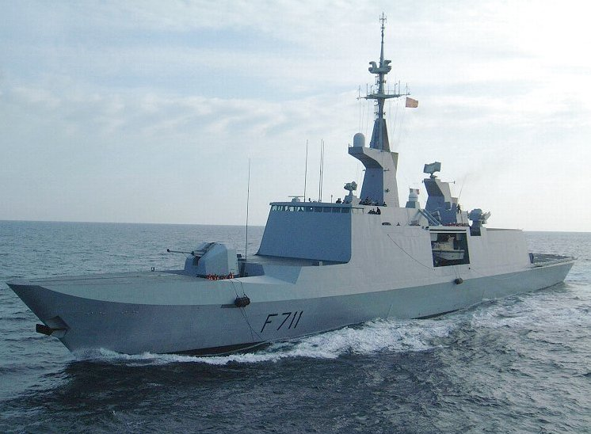

瀏覽人數 :
國防科技 - 軍艦
瀋陽艦
瀋陽號飛彈驅逐艦
瀋陽號飛彈驅逐艦 DDG-923，舷號923，原是美國海軍基靈級（Gearing class）包爾號（USS Power DD-839），其艦名取自二次大戰中在馬紹爾群島瓜加林戰役中英勇殉職並獲追贈最高榮譽榮譽勳章的美國海軍陸戰隊中尉約翰•文森•包爾（John V. Power）。
本艦於美國海軍服役至1977年9月除役，10月1日以剩餘軍品價格售予給中華民國海軍，奉派前往美國長島接收的首任艦長是劉晉德。中華民國重新命名為「瀋陽」（DD-923），10月1日也成為瀋陽艦的艦慶，後於美國進行相關整修後於1978年12月18日回國服役。
此為中華民國海軍最後一艘退役的二戰時期陽字號驅逐艦，已於2005年11月26日舉行除役典禮，正式除役日期為2006年1月1日。在美國與中華民國服役時間超過60年。
裝備
1945年服役初期
1. Mk 38雙連裝五吋炮3座
2. 40高射炮12門
3. 20機炮11挺
4. 21寸魚雷發射管10枚
5. 深水炸彈投射器 x 6
6. 深水炸彈投放軌 x 2
1962年FRAM I
1. MK.38雙連裝五吋炮2座
2. 40高射炮12門
3. 20機炮11挺
4. 三聯裝Mk 32型水面船艦魚雷管 x 2
5. 深水炸彈投射器 x 6
6. 深水炸彈投放軌 x 2
7. 反潛火箭發射器
1990年武進三型
1. 76快炮 x 1
2. 40mm快炮2座
3. 標準SM-1MR防空飛彈10枚
4. 三聯裝Mk 32型水面船艦魚雷管 x 2
5. 雄風二型反艦飛彈4枚
6. 方陣近迫武器系統1座
7. 反潛火箭發射器1座
海軍二代艦
成功級巡防艦
成功級巡防艦是中華民國海軍現役巡防艦，為取代陽字號而生產，為美國海軍派里級巡防艦的修改型，原本以船團護衛任務為主要設計核心，在中華民國海軍修改下安裝國造反艦飛彈及40mm快炮增強反艦、反快艇能力。
美國海軍規劃派里級巡防艦的設計以反潛作戰為主，於低威脅環境下為遠洋船團護航及作為兩棲登陸船團的屏衛，在機能設計上屬於二線、低造價、可犧牲的艦艇。囿於台灣海峽防衛作戰需求與軍售限制，本級艦除負責反潛作戰外，也擔負艦隊區域防空任務。目前成功級均配屬在海軍一四六艦隊下，母港為海軍馬公基地測天島軍港，平時負責台灣海峽海域偵巡任務。
艦艇數據
全長138公尺 全寬13.716公尺
吃水6.7公尺 標準排水量3,900噸 最高速度29節
裝備
1. 1座Mk13 Mod 4單臂飛彈發射器，40枚RIM-66標準一型MR Block VI B中程防空飛彈
2. 2座雙聯裝雄風二型反艦飛彈
3. 2座雙聯裝雄風三型反艦飛彈
4. 1門OTO 76公釐單管快砲
5. 2具Mk 32型水面船艦魚雷管，6枚Mk 46型魚雷
| 艦名 | 舷號 | 安放龍骨日期 | 下水日期 | 服役日期 |
|---|---|---|---|---|
| 成功（Cheng Kung）號 | PFG-1101 | 1990年12月21日 | 1991年10月05日 | 1993年05月07日 |
| 鄭和（Cheng Ho）號 | PFG-1103 | 1991年10月29日 | 1992年10月15日 | 1994年03月28日 |
| 繼光（Chi Kuang）號 | PFG-1105 | 1992年10月30日 | 1993年10月03日 | 1995年03月04日 |
| 岳飛（Yueh Fei）號 | PFG-1106 | 1993年09月05日 | 1994年08月28日 | 1996年02月26日 |
| 子儀（Tzu I）號 | PFG-1107 | 1994年08月07日 | 1995年07月13日 | 1997年01月09日 |
| 班超（Pan Chao）號 | PFG-1108 | 1995年07月25日 | 1997年07月03日 | 1997年12月16日 |
| 張騫（Chang Chien）號 | PFG-1109 | 1995年12月04日 | 1997年05月14日 | 1998年12月01日 |
| 田單（Tian Dan）號 | PFG-1110 | 2001年02月22日 | 2002年10月17日 | 2004年03月11日 |
拉法葉艦
拉法葉級巡防艦
拉法葉級巡防艦（La Fayette class，法文縮寫為FL-3000或FLF）是一種由法國DCNS集團負責建造並服役於法國海軍的輕型多用途巡防艦，為世界上第一種隱形戰艦。
最大特點是採用了低可偵測性技術，所以也被稱為隱形巡防艦。艦體採用了與傳統設計相較更加簡約的上層建築和成角度的艦體側面設計，再加上使用了雷達信號吸收材料使得雷達反射截面積顯著減小；這種由木材與玻璃纖維混合製成的特殊材料擁有與鋼鐵相同的硬度但更輕，並且耐火。
拉法葉級擁有高度現代化信息處理能力。艦上搭載的信息處理系統可以管理所有通過艦載感測器收集的信息，而該系統也是艦上操控中心的電子中樞。整個過程通過一個電子指令輔助系統完成。
拉法葉級設計可以容納像黑豹或NH90這樣重量在10噸以內的一架艦載直升機。而這些艦載直升機可以攜帶AM39或AS15反艦飛彈；而艦上搭載的Samahé直升機著艦系統可以在5或6級海況下，使直升機完成起飛或著艦。
1988年，法國宣布採購5艘拉法葉級巡防艦，最後一艘於2002年服役。此外，沙烏地阿拉伯（利雅德級）採購了3艘，新加坡（可畏級）和中華民國（康定級巡防艦）各採購了6艘。
艦艇數據
全長125公尺 全寬15.4公尺
吃水4.1米 排水量3,200噸 最高航速25節
裝備
1. 飛魚 MM40 block II 反艦飛彈 × 8
2. 100 mm TR 自動火炮 × 1
3. 20 mm modèle F2 高射炮 × 2
4. 響尾蛇 CN2 近程防禦武器系統 × 1
| 艦名 | 舷號 | 安放龍骨日期 | 下水日期 | 服役日期 |
|---|---|---|---|---|
| 康定（Kang Ding）號 | PFG-1202 | 1993年8月26日 | 1994年3月12日 | 1996年5月24日 |
| 西寧（Si Ning）號 | PFG-1203 | 1994年3月14日 | 1994年11月5日 | 1996年10月12日 |
| 昆明（Kun Ming）號 | PFG-1205 | 1994年11月6日 | 1995年5月13日 | 1997年2月26日 |
| 迪化（Di Hua）號 | PFG-1206 | 1995年7月1日 | 1995年11月27日 | 1997年8月14日 |
| 武昌（Wu Chang）號 | PFG-1207 | 1995年7月1日 | 1995年11月27日 | 1997年12月16日 |
| 承德（Chen De）號 | PFG-1208 | 1995年12月27日 | 1996年8月2日 | 1998年3月19日 |